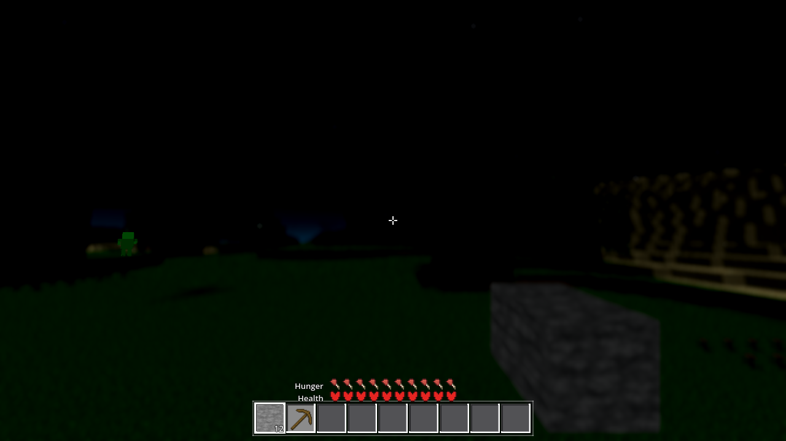
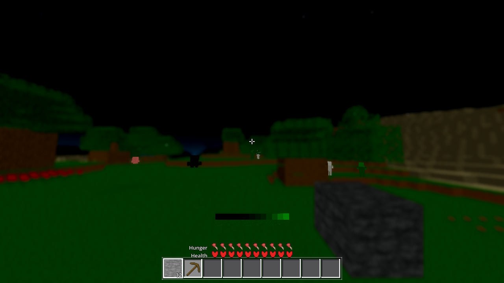
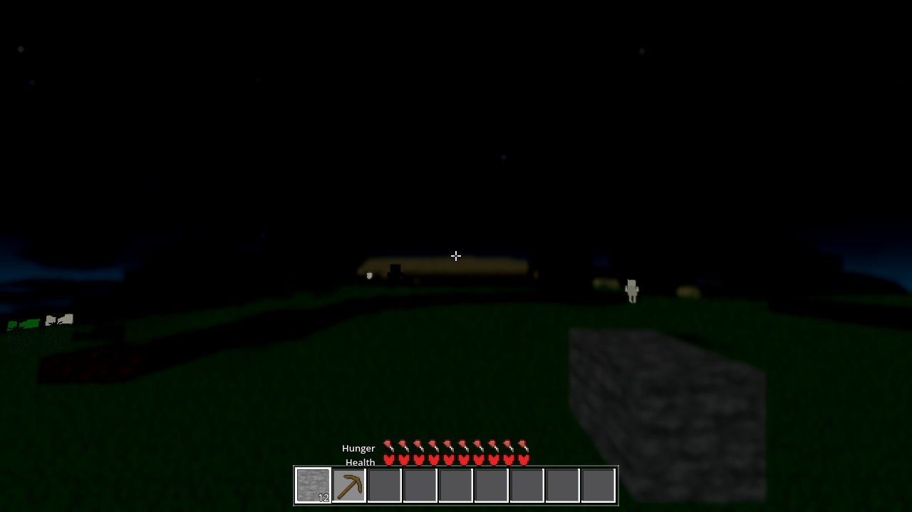
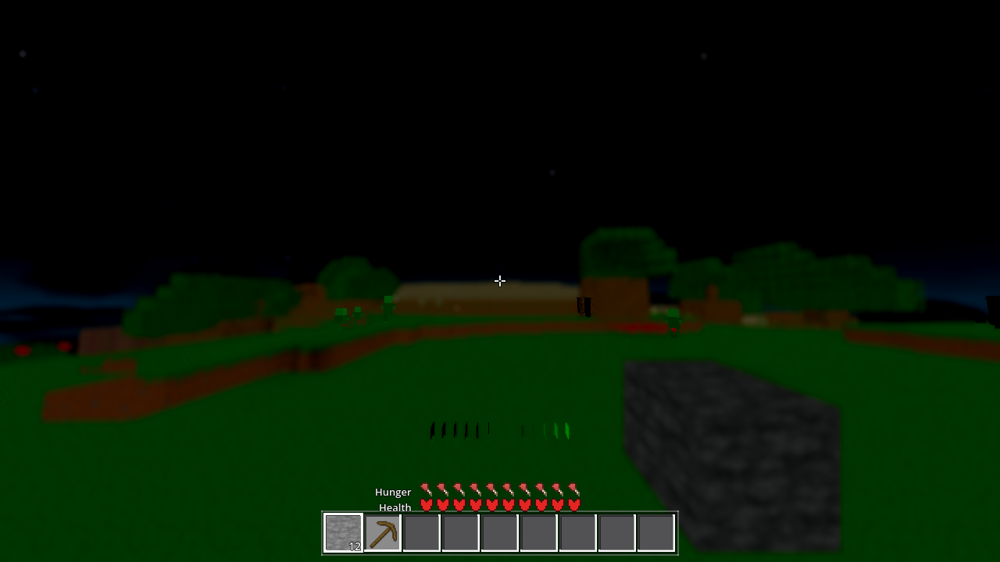

Status: done (light gates green; heavy gates are the coordinator's).
The midnight floor was measured, the ceiling proved to be the tone mapper's dead zone, and the fix
belongs to the chunk shaders — a night-only, hue-preserving toe on the predecoded ALBEDO, shipped
behind a new night_lift switch (default OFF, AWECRAFT_NIGHTLIFT=0|1 boot env,
menu row).
Measured this session, band y440–599 × 1280 (the assessment strip), Rec.709 luma of the 8-bit bytes,
R24/F83, seed 44, TIME_FREEZE=1, horizon pose 8.5,143.62,8.5,0,0.08:
| t (time of day) | hour | day(t) | band avg | notes |
|---|---|---|---|---|
| 0.00 | midnight | 0.000 (exact) | 12.86 | b0-night.png — the acceptance hour |
| 0.25 | dawn | 0.343 | 21.84 | b1-dawn.png |
| 0.50 | noon | 1.000 | 99.96 | b2-day.png |
| 0.75 | dusk | 0.343 | 21.07 | b3-dusk.png |
Dusk is 1.7× brighter than true midnight (21.07 vs 12.86) — and the moon's night weight is 0.657 at t=0.75 vs 1.0 at t=0.0. Any dusk-tuned "night" number is tuned against the wrong light.
Prior-numbers audit (plain): r24/r25/AC-0436 all shot AWECRAFT_TIME=0.0 — true midnight,
not dusk; a t=0.0 re-shoot reproduces the published r25 frame exactly (avg 12.86 = 12.86, identical
histogram). The ticket's "~3/4 below 10" is r25's 76% figure, computed as plain-average luma over full
ground rows (reproduced: 74.9% on that frame) — a different convention than the standard band
(15.9% <10, 81.6% in 0–15, median 12.16, p90 22.79, max 70.1). AC-0446's own r3/r4 "night" A/B used
t=0.75 (dusk) — the ticket's warning applies to it.
Live uniform dump (t=0.0): u_day=0.0, u_moon=0.25, u_moon_dir=(0, 0.9285, 0.3714), u_amb=0.35,
atlas sampled without sRGB decode (runtime format RGB16), so the shader's pow(2.2) predecode is the
sRGB→linear step and the ALBEDO that enters the mapper is the predecoded (linear) value. In-game ground
truth (mode grass texel, real ground reads):
| face / hour | L in shader | predecoded ALBEDO (G) | on-screen byte |
|---|---|---|---|
| top face, day (t=0.5) | 1.0 | 0.1087 | (14,128,0) |
| top face, dusk (t=0.75) | 0.474 | 0.0211 | (0,25,0) |
| top face, night (t=0.0) | 0.432 | 0.0172 | (0,18,0) |
| side face, night (moon-facing) | 0.293 | 0.0016 | (0,0,0) |
| floor face, night | 0.20 | 0.0004 | (0,0,0) |
The input has structure and the output is zero — the problem is the mapping. The game's own G-channel transfer curve, measured in-game (unshaded probe quads on the real ground; verified: the g=0.0172 probe point returns byte 18 — the night grass top byte — exactly):
| g in (linear) | 0.0002 | 0.0005 | 0.001 | 0.002 | 0.004 | 0.007 | 0.012 | 0.0172 | 0.025 | 0.04 | 0.06 | 0.09 | 0.12 |
|---|---|---|---|---|---|---|---|---|---|---|---|---|---|
| byte out | 0 | 0 | 0 | 0 | 0 | 1 | 10 | 18 | 29 | 48 | 70 | 100 | 125 |
Dead zone below ~0.005; steep rise after. Full-intensity red (1,0,0) → (255,0,0) uncrushed — the environment does not crush highlights, it crushes the dark end. An exposure change can't fix this: the floor needs ×~30 at night and would blow out the day. The honest conclusion: the fix belongs in the per-chunk light model (the shaders), not the engine tone mapper — implemented exactly that way, as the ticket allows.
Eight chunk_lit_*.gdshader (opaque/cutout/flower/fluid + the four _fade variants): after the
AC-0242 predecode,
float ac47_lum = dot(ALBEDO, vec3(0.2126, 0.7152, 0.0722)); ALBEDO *= 1.0 + u_night_lift * 42.5 * pow(0.00175 / (ac47_lum + 0.00175), 1.5);
a luma-scaled, hue-preserving gain f = 1 + w·A·(d/(g+d))^p with A=42.5, d=0.00175, p=1.5,
fitted against the measured curve: the midnight floor (g≈0.0004) gains ×31.7 (byte 0 → ~12), the
moonlit grass top (g≈0.0172) ×2.19 (byte 18 → ~45), the moon-facing side ×~17 (→ ~30); g=0 stays 0;
g·f(g) monotone. w = u_night_lift = (1 − day)·switch, pushed per-frame, value-gated from
world.gd _ac0401_push to the chunk and fluid materials. At day or with the switch OFF,
w=0.0 and f is exactly 1.0 (IEEE: 0·x=0, 1+0=1, x·1=x) — bit-identical.
New switch: Settings "night_lift" default false (conservative — AC-0446 far_seam OFF precedent
under identical ticket wording), sanitize_bool, menu row "Night: lift the floor (readable midnight)",
AWECRAFT_NIGHTLIFT=0|1 boot env (the AWECRAFT_MOON pattern, written WITHOUT save).
ARCHITECTURE.md updated in-task (Settings row).


| night band (y440–599) | b0 (OFF) | a0 (ON) |
|---|---|---|
| avg / median | 12.86 / 12.16 | 33.54 / 36.48 |
| p10 / p25 / p75 / p90 / max | 2.28 / 11.44 / 12.87 / 22.79 / 70.1 | 22.79 / 30.11 / 37.19 / 37.19 / 111.4 |
| L<5 / L<10 / L<20 | 11.5% / 15.9% / 84.8% | 0.6% / 0.8% / 4.4% |
| bucket 0–15 / 16–31 / 32–47 | 81.6% / 16.9% / 1.0% | 1.4% / 26.1% / 70.4% |
Local strips (same frame): grass-top rows 470–490 avg 13.2 → 32.8 (zero-pixels 3.0% → 0.0%); side/floor rows 500–590 avg 15.0 → 32.5 (1.7% still pure black — the far, fogged floor). Night kept its depth: the mass moved into one mid band (32–47, 70.4%), not a flat wash; max stayed in the moonlit highlights (111.4 vs day's 219.3).


Full-frame pixel diff, 1280×720, same recipe (the two frames' capture state is the documented mid-build SNAPDRAIN state — identical recipe, apples-to-apples):
| pair | diff px | share | max channel-sum Δ |
|---|---|---|---|
| control: two independent baseline day runs (both lift OFF) | 25,420 | 2.758% | 728 |
| subject: baseline day (OFF) vs after day (ON, t=0.5) | 17,507 | 1.900% | 662 |
Band histograms: OFF avg 99.96 / control avg 99.22 / ON avg 98.93 — the lift-ON frame sits inside the baseline pair's own noise band (median 95.24 and max 219.3 identical across all three). Signature of the subject diff: 55.4% of changed pixels are darker (a multiplicative gain ≥1 can only lighten) and 2,419 px carry Δ>64 (impossible for f≡1.0) — it is the run-to-run stochastic flicker class (the same white-sky↔dark-green swap, at the same coordinates, appears even between the two captures of a single run). Verdict: day unchanged within noise; no leak from the switch.
| gate | result |
|---|---|
| G0 (headless load, census + exit status) | RC=0, 0 SCRIPT / 0 SHADER ERROR |
SMOKE player;interact;light;fluids;genhash | RC=0, census ok, battery ok:true, all 5 modes green (after probe revert — see finding 3) |
| genhash | 25/25 byte-identical vs the standing HEAVY-r22 reference (.scratch/HEAVY-r22/genhash.log); GENMS 127 |
| settings arm | RC=0, census ok, ok:true (all sub-flags) — the night_lift key round-trips; end-to-end proven by the AWECRAFT_NIGHTLIFT=1 renders |
| meshprobe | ok true, match_rate 1.0, verts 255,192/255,192 |
| shaderforce (forced compile, Forward+/lavapipe) | 17/17 verdict ok, failed=[] — all eight patched chunk shaders included (count is 17 now: 16 + AC-0446's lod_avg_seam.gdshader; the HARNESS row still says 16) |
.scratch/AC-0367-gates/genhash_pristine_r1.log,
but the standing reference is .scratch/HEAVY-r22/genhash.log (AC-0442 verified against it; the AC-0367 set
moved with the later gen rebases). 25/25 verified against HEAVY-r22. Pointer update owed at closeout.godot/autoload/debug.gd (+11/−1),
godot/autoload/game.gd (+1), godot/entities/drop.gd (+3), godot/scenes/main.gd (+22) and two
AC-0067 PNGs are modified against HEAD before this session started (fenced files — not edited here).
The first smoke run's 13 SCRIPT ERRORs were my own temporary probe autoload (headless viewport null),
fixed by the planned revert, not by the fence files.^ is not the power operator (Invalid arguments to operator '^') —
the first after-battery failed 12× SHADER ERROR on the toe line; fixed with pow() and caught by the
census before any frame was trusted.Changed (named explicitly — the scanner skips untracked):
godot/world/chunk_lit_opaque.gdshader, chunk_lit_opaque_fade.gdshader, chunk_lit_cutout.gdshader,
chunk_lit_cutout_fade.gdshader, chunk_lit_flower.gdshader, chunk_lit_flower_fade.gdshader,
chunk_lit_fluid.gdshader, chunk_lit_fluid_fade.gdshader (each: +u_night_lift uniform + the toe),
godot/world/world.gd (boot env read, push state, per-frame value-gated push to chunk + fluid materials),
godot/autoload/settings.gd ("night_lift": false + sanitize), godot/ui/menu.gd (row + sync + handler),
godot/ARCHITECTURE.md (Settings row clause). Reverted: godot/project.godot (clean vs HEAD),
temporary godot/autoload/probe_env_tmp.gd and standalone godot/.probe_ac0447/ deleted.
New (kept, named): tasks/AC-0447/AC-0447-results.html, captures a0-night, a1-day,
a2-night-ridge (+ _placed twins), c0-day-ctrl (the day-noise control); .scratch/AC-0447/
(git-ignored: logs, measure.py, diff_day.py, render_baseline.sh, render_after.sh).
Fenced files and AC-0067/AC-0384/AC-0425 untouched.